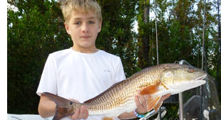
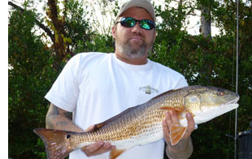
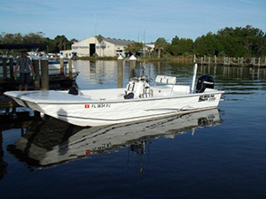

Citrus County Florida - Saltwater Fishing Rates
Full Day and Half Day saltwater fishing trips are available in these areas: Homosassa, Ozello, Crystal River, Chassahowitzka, and Northern Hernando County.
Full Day $400.
Includes up to 2 anglers.
$50 for each additional person, maximum 4.
I also have incentive rates for repeat clients!!!
Half Day $300
Includes up to 2 anglers.
$50 for each additional person, maximum 4.
I also have incentive rates for repeat clients!!!
Fishing rates includes boat, professional guide, ice, bait, tackle, and fuel.
Scalloping Rates
Start at $175 in season
Manatee Tours/Sight Seeing Tour Rates
$60 per hour, minimum 2 hours.
Up to 6 passengers.
The Boat
We will be fishing from a very spacious 2390 EW Carolina Skiff boat powered by a four stroke, 115hp. Mercury engine. For the shallow water ins and outs, a high-speed CMC Jackplate does the trick. We also use a shallow water power pole to anchor with less noise than a traditional chain & anchor.
For those that enjoy music while fishing, the boat is equipped with an AM/FM, CD, MP3, and IPOD stereo system, so bring your favorite tunes.
I can also accommodate 4 local or out-of-state anglers with a saltwater fishing license for the day at no extra cost.
Book your saltwater fishing trip today!